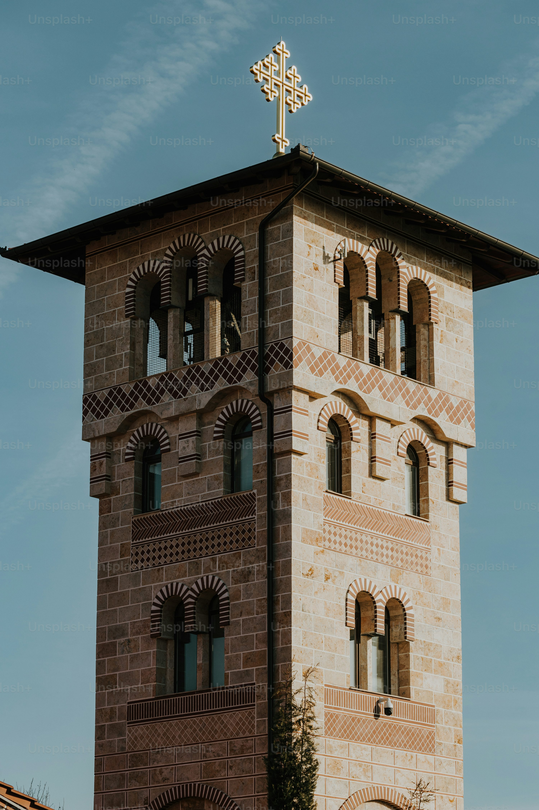
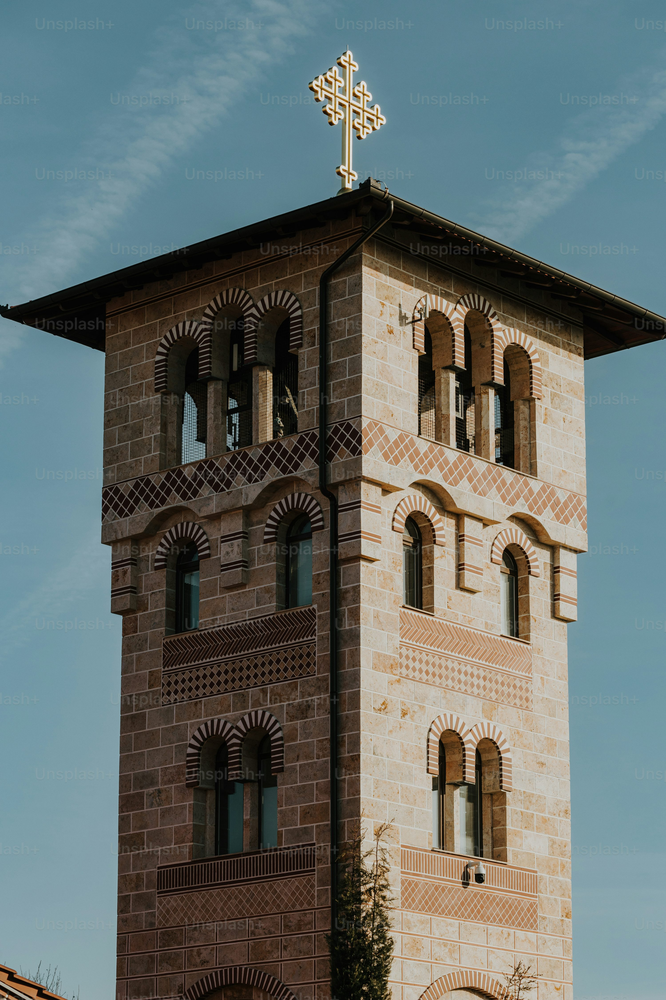
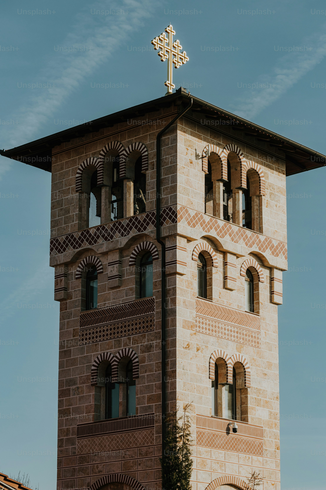

Osaka Castle
 

Osaka Castle played a major role in the unification of Japan during the 16th century. Its majestic architecture and rich history make it a must-visit destination.

Osaka Castle played a major role in the unification of Japan during the 16th century. Its majestic architecture and rich history make it a must-visit destination.